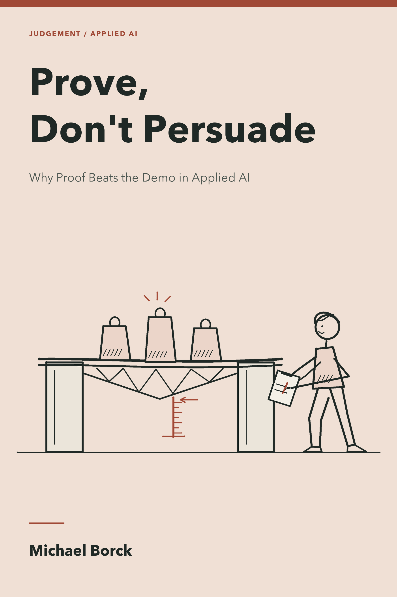

Prove, Don’t Persuade
Why Proof Beats the Demo in Applied AI
Introduction: The Proof Mindset

Anyone can demo AI. The edge is proving it works.
The demo and the deployment
Watch any AI vendor for ten minutes and you will see a demo. It is slick, fast, and a little theatrical. A model drafts a policy in seconds. A chatbot answers a customer perfectly. A classifier sorts a tidy spreadsheet into the right piles, every time. The demo is designed to persuade. Read it as a practitioner and it reads as an assertion: a claim that has not yet met its evidence.
Tessera has demos like this on its internal wiki. Tessera is an Australian managed-cloud and multi-tenant SaaS provider, founded in Perth, serving more than 600 clients across the SME and enterprise segments, and betting on AI to triage support tickets, flag churn, and summarise contracts. Its AI prototypes are impressive. Somewhere behind those prototypes is a churn model that quietly misses an entire customer segment, a ticket classifier that falls over the moment a customer is sarcastic, and a contract summariser that sounds confident about clauses it invented. Or maybe not. Nobody knows yet, and neither does Tessera’s board.
And Tessera has a reason to care that most companies do not. Recently it lived through a data breach, a leaked cloud key that exposed tenant records and cost it customers and trust. One of the lessons it took from that incident is now stitched into its own stated values: evidence over assertion. This book takes that idea seriously, in the place it matters most for an AI-build programme: before you rely on any model, you prove what it actually does.
This book is about closing the gap between the demo and the deployment. It teaches the discipline that does it: prove, don’t persuade.
What “applied AI that works” actually is
Applied AI is not prompt engineering and it is not model training, though it borrows from both. A prompt engineer coaxes a better answer out of a model. A data scientist trains a model from scratch. An applied-AI practitioner does something messier and more useful: takes a real business problem, assembles a solution from models, data, and a harness, and then finds out whether it actually works, well enough, for the right people, under the conditions that will bite.
The product of applied AI is not a model. It is a defensible judgement: this solution, on this problem, for these users, is good enough to ship, with this much human oversight, and these known limits. That judgement is the thing a business cannot buy from a vendor’s demo. A vendor will always show the case where it works. A standard will always describe what good should look like. Only the practitioner says whether the two match, here, now, against the evidence.
Does it actually work?
“Does it actually work?” is the question this book lives inside. It is a different question from “is it impressive?”, and confusing the two is the most common failure mode in applied AI. A demo is engineered to be impressive. A deployment has to actually work, which means surviving inputs the demo never showed you, failing gracefully where it must, and being trusted (or not) by the people who depend on it.
Answering it well is not a vibe. It is a discipline: state what “good enough” means before you measure, measure honestly, name who your solution fails, and decide how much a human must stay in the loop. None of that is optional, and none of it is what the demo showed you.
The trust tool
Before you build or evaluate anything, you need one small idea you will use in every chapter: the trust tool. It extends the companion book’s checking habits into an applied-AI review aid, and asks two questions of any AI output, before you act on it:
- Does this need to be precise, or is average fine?
- If it’s wrong, how big is the blast radius, small or large?
That gives a 2×2: green (skim and use), yellow (verify the load-bearing bit), red (a human signs off). The grid is a teaching aid for deciding how much checking a use requires, not a complete safety assessment. Permissions, source quality, and the review process also matter. The trust tool makes placement a conscious act. By the final chapter, placing an output on this grid should be a reflex.
Write the proof brief before you build
Choose one proposed use and open a proof dossier: a folder or notebook that keeps the decision, its evidence, and its limits together. Start with a one-page brief. Keep the original when you revise it; a changed threshold is a new decision to explain, not a way to rescue a disappointing score.
| Brief field | What to record before testing |
|---|---|
| Intended use | The decision this system supports, its users, and one use it must not perform |
| Affected people | Who benefits, who bears an error, and who can challenge a decision |
| Baseline | The existing process or simple rule the proposed system must improve on |
| Acceptance rule | A measurable threshold, the denominator, and the cost of each important error |
| Evaluation plan | Unseen test cases, relevant groups or conditions, and data kept separate from development |
| Data boundary | What may enter the system, permitted destinations, and approval still needed |
| Stop and escalation | A condition that halts use, the person responsible, and the manual fallback |
| Evidence record | Inputs, outputs, counts, sources, versions, date, reviewer, and final decision |
For example, Tessera might propose routing suggestions for a human support reviewer, with no authority to close a ticket. For a classroom prototype, set a provisional rule: identify at least 9 of 10 fault examples in each lighting condition, and show every proposed route to the reviewer. These are teaching thresholds, not a production safety standard. A false-clear can leave a customer offline; a false alarm costs review time. Record both, not just overall accuracy. The small test can reveal a failure but cannot establish a reliable real-world rate.
Your first brief will contain unknowns. Write “not yet established” beside them and name the evidence needed. Do not invent a baseline or an approval. By the end of Act I, you should be able to explain the affected groups, data restrictions, and deployment constraints. By the end of Act II, you should be able to test a candidate, compare it with a baseline, and defend a go, revise, or stop decision.
Appendix C supplies the dossier structure and capstone criteria. Start it now; do not reconstruct your reasoning after seeing the results.
Use the invented inputs supplied here. For real work, do not submit confidential or personal information to an unapproved destination. Check the product, plan, configuration, connected tools, and applicable obligations; an enterprise label or local model alone does not establish permission or privacy. Chapters 5–6 develop those checks.
Who this book is for
This book is for anyone learning to build and evaluate applied AI for the first time, in a no-code business context. You do not need to be a developer. You need to be willing to form a judgement and defend it with evidence.
It is also for any practitioner, new or experienced, who wants a readable, opinionated spine for applied AI, and a clear stance on where the human fits once the machines can build the demo. If you build AI, buy AI, or rely on AI in a business, the argument here is for you.
How this book works
The book is one case told twelve ways. You build for and evaluate Tessera, an Australian managed-cloud company betting on AI. Each chapter asks one question, from What changed? through For whom?, Can you tell? and on to Does it actually work? and What comes next?. Read the chapters in order: each one builds on the trust tool, the harness, and the proof mindset the last one established.
The arc has two acts:
| Act | Chapters | What it does |
|---|---|---|
| I · Foundation | 1–6 | What changed, for whom: landscape, ethics, data, privacy constraints, deployment |
| II · Build and Prove | 7–12 | Does it actually work: prompting, NLP, evaluation, model comparison, agents, the future |
Act I builds the base: the concepts and the stance.
Running through both acts is the conversation log: the cumulative record of your thinking with AI across the book, where you document what you asked, how you pushed back, and what you decided to trust. Each chapter’s Conversation Log feature is the book version of that discipline.
A no-code floor, and a ceiling for those who want it
There are two routes. Self-study readers can develop the proof brief and dossier, audit the supplied examples, and complete the paper-based activities without an AI account. That route practises evaluation and decision-making; it does not claim that you have built or operated a model. Build-along readers also use the tools in Appendix F and obtain the external case materials for the relevant lab. These activities are no-code in their analysis, but local model setup can require a terminal, suitable hardware, or a facilitator.
The optional 🔬 Power-user extensions add measurement, a second model, self-hosting, or code. Install tools only when needed. If a build-along resource is unavailable, mark the build as not attempted and continue with the worked case; do not report its illustrative results as your own measurements.
A living case: the Tessera site
Tessera is fictional. Its companion site, tessera.locoensayo.org, extends the teaching case with documents, datasets, and staff personas. This edition bundles a small synthetic lab-v1 pack in Appendix G. It does not bundle the full companion-site customer CSV, support CSV, policy collection, or router photographs. The prose describes those materials but is not a substitute for the files needed to reproduce a build. Appendix E maps the external dependencies. Save the files and record their retrieval date and version before starting a lab; the site may change.
The core activities contain their own inputs or use the complete printed and downloadable lab-v1 pack in Appendix G. Case dialogue and numerical results are constructed teaching examples unless an accompanying source and run record explicitly identify a measurement. Your results can differ. A useful dossier distinguishes observed, illustrative, and not tested evidence.
The companion book
Conversation, Not Delegation (https://michael-borck.github.io/conversation-not-delegation/) is the companion on method. Where this book teaches the build-and-evaluate discipline (the what we prove), that book teaches how to work with the machine well: the conversation loop, VET, and choosing appropriate assistance and checks. Appendix A here contains the trust grid in full. The two are complementary. When you use AI here, use it as a thinking partner whose claims need checking. The paper-based route lets you practise that checking without a model.
The series trunk is Conversation, Not Delegation for method and The Human Edge for professional judgement. This book is the branch for applied-AI evidence.
Conventions used in this book
Chapters use a selection of the following features, alongside worked calculations and independent tasks.
Blue boxes show AI used as a thinking partner for the chapter’s task: a worked example against Tessera, including, crucially, where the AI got it wrong and how the practitioner corrected it.
Green boxes place the chapter’s output on the Average/Precise × Small/Large grid, and say what that means for human oversight. The grid concerns the intended use, not a permanent property of a model.
🌐 Tessera Case
Shaded boxes carry the running Tessera engagement: the concrete artefact each chapter lands on. Tessera is written to be plausible: impressive in its prototypes, rougher underneath. Good practice does not assume the worst. It proves what is there.
You will also see 🔍 Go deeper in selected chapters, with other sources linked beside the claims they support, the optional 🔬 Power-user extension (a deeper take on the chapter’s hands-on work), and standard callouts: Watch out (yellow) for traps that look right but aren’t.
Chapter practice varies between conversations, independent audits, calculations, and decision memos. Where a full starting prompt is useful, RTCF means Role, Task, Context, and Format. Adapt it to the job rather than repeating four labels mechanically. Preserve the original output, your checks, and your decision in the dossier. Use only invented or approved data; an exercise never authorises uploading real customer records.
How this book came to be
This book grew out of years of teaching applied AI to people who do not write code: newcomers and experienced practitioners who needed to build something real, evaluate it honestly, and defend the result. The frustration that shaped it is simple: too much AI education stops at the demo. The discipline this book teaches (prove, don’t persuade) is the one those readers carry into every solution they build and ship. The book stands on its own; where its path happens to align with a course or a classroom, that is a happy coincidence, not a dependency.
It was written using the methodology its companion describes. AI tools were used as thinking partners at every stage: drafting, stress-testing, and being corrected. The relationship between author and AI in producing this book is exactly what the book argues the practitioner’s relationship to AI-generated work should be. The machine produces the draft; the author supplies the judgement, the evidence, and the defensible conclusion. Every sentence reflects the author’s judgement. The AI made the work faster without doing the thinking.
A note on where this book is at
This is an open-access book. The full text is drafted: an Introduction, twelve chapters across two acts, and seven appendices. The online edition is always the most current, and passages are revised as the field moves.